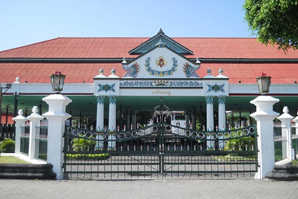
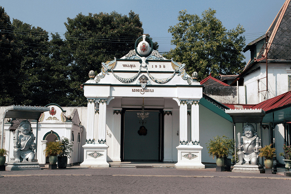
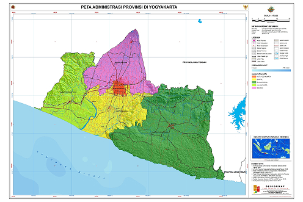
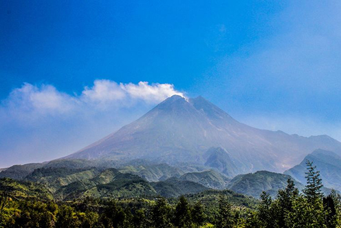
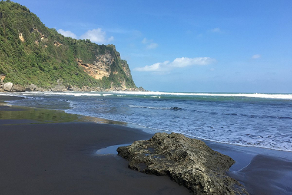
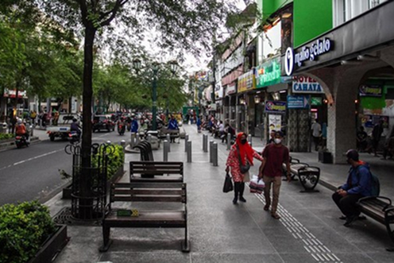

Sejarah
Yogyakarta adalah daerah istimewa di Indonesia yang berdiri setelah Perjanjian Giyanti pada tahun 1755, yang membagi Kerajaan Mataram Islam menjadi dua: Kasunanan Surakarta dan Kesultanan Yogyakarta. Pangeran Mangkubumi diangkat menjadi Sultan Hamengkubuwono I dan mendirikan Kesultanan Yogyakarta serta membangun Keraton sebagai pusat pemerintahan. Sejak saat itu, Yogyakarta berkembang menjadi pusat kekuasaan dan budaya Jawa yang penting.
Dalam sejarah Indonesia, Yogyakarta memiliki peran besar, terutama saat menjadi ibu kota negara sementara pada tahun 1946–1949 ketika Jakarta diduduki Belanda. Atas jasanya dalam perjuangan kemerdekaan, Yogyakarta diberi status Daerah Istimewa, di mana Sultan menjabat sebagai gubernur secara turun-temurun. Hingga kini, Yogyakarta dikenal sebagai kota budaya yang kaya akan tradisi Jawa, seni, dan warisan sejarah seperti Keraton, batik, gamelan, serta Candi Prambanan.


Geografis
Yogyakarta terletak di bagian selatan Pulau Jawa, Indonesia, dengan luas wilayah sekitar 3.185 km². Kota ini dikelilingi oleh Gunung Merapi di utara, yang merupakan gunung berapi aktif, dan Samudra Hindia di selatan. Yogyakarta memiliki iklim tropis dengan dua musim: musim hujan (November-April) dan musim kemarau (Mei-Oktober). Sungai Progo dan Sungai Opak mengalir melalui wilayah ini, memberikan sumber daya air yang penting.
Secara administratif, Yogyakarta terdiri dari satu kota (Kota Yogyakarta) dan empat kabupaten (Sleman, Bantul, Kulon Progo, dan Gunungkidul). Kota Yogyakarta sendiri merupakan pusat pemerintahan dan budaya, sedangkan kabupaten-kabupaten sekitarnya memiliki potensi wisata alam yang kaya seperti pantai, pegunungan, dan candi-candi bersejarah.


Wisata
Kota Yogyakarta, atau Jogja, adalah destinasi wisata yang kaya akan budaya dan keindahan alam. Kota ini terkenal dengan warisan sejarahnya yang kuat, seperti Candi Prambanan dan Keraton Yogyakarta yang megah. Selain itu, Jogja juga dikenal dengan seni tradisionalnya, mulai dari batik, tari, hingga kerajinan tangan yang masih lestari hingga kini. Para wisatawan dapat menikmati suasana kota yang hangat dan ramah, sambil menjelajahi berbagai pasar seni dan kuliner khas yang menggoda selera.
Tak hanya budaya, Yogyakarta juga menawarkan keindahan alam yang memukau. Gunung Merapi yang megah menjadi salah satu ikon utama yang menarik para pendaki dan pecinta alam. Di sisi lain, pantai-pantai di Gunungkidul, seperti Pantai Indrayanti dan Pantai Siung, menyuguhkan pemandangan laut yang mempesona dengan pasir putih dan ombak yang menantang. Dengan kombinasi antara kekayaan budaya dan pesona alam, Jogja menjadi pilihan tepat bagi wisatawan yang ingin merasakan pengalaman yang lengkap dan berkesan.

